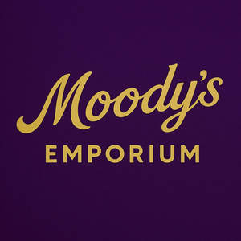

Trade Mark Journal No.2025/019 9 May 2025
UK00004193450 23 April 2025 (9,32,35)

- Class 9
- E-commerce software; E-commerce and e-payment software; Computer e-commerce software; Software for designing online advertising on websites; Retail software; Business software; Software for embedding online advertising on websites; Interactive business software; Software for the processing of business transactions; Software for online messaging; Computer e-commerce software to allow users to perform electronic business transactions via a global computer network; Search marketing software; Web site development software; Web development software; Business application software; Business technology software; Software for operating an online shop; Web server software; Software for evaluating customer behaviour in online shops; Business intelligence software; Website development software; Web content management [WCM] software; Business management software; Software for renting advertising space on websites; Software for arranging online transactions; Digital solutions provider [DSP] software; Computer hardware; Hardware (Computer -); Computers and computer hardware; Computer hardware for telecommunications; Computer networking hardware; Computer network hardware; Monitors [computer hardware]; Microchips [computer hardware]; Computer memory hardware; Wearable computer hardware; Computer software; Computer hardware for use in computer-assisted software engineering; Communications servers [computer hardware]; Computer graphics software; Computer hardware for games and gaming; Computer gaming software; Computer peripherals; Firmware for computer peripherals; Computer application software for use with wearable computer devices; Computer software for accessing computer networks; Computer software for the monitoring of computer systems; Operating computer software for main frame computers; Computer hardware for the control of lighting; Computer software for computer aided software engineering; Mounting racks for computer hardware; Computer firmware; Computer software for testing vulnerability in computers and computer networks; Computer telephony software; Computer firewall software; Computer programming software; Computer software for encryption; Computer operating software; Computer chipsets; Computer interface software; Computer software applications; Computer games software; Software for computers; Computer antivirus software; Computer hardware modules for use in Internet of Things electronic devices; Computer game software; Computer software for use in computer access control; Computer motherboards; Computer whiteboard software; Computer software platforms; Computer software for education; Computer software downloadable from global computer networks; Computer software adapted for use in the operation of computers; Wireless computer peripherals; Controlling software for computer printers; Computer software programs; Computer software for use in programming facsimile machines; Software for tablet computers; Computer systems; Computer software for entertainment; Computer hardware modules for use with the Internet of Things [IoT]; Computer hardware for the processing of positioning data; Computer network-attached storage [NAS] hardware; Computer network-attached storage (NAS) hardware; Computer software for use in computer network access control; Computer game software downloadable from a global computer network; Educational computer software; Wearable computer peripherals; Computer application software; Computer mainframes; Computer software for the detection of threats to computer networks; Computer modems; Graphics processor units (GPUs); Graphics processing units [GPUs]; Chipsets; Central processing unit [CPU] coolers; Motherboards; Microprocessor cores; Central processing unit [CPU] clocks; Central processing unit [CPU] fans; USB hardware; Ethernet hardware; PC cards; Fluid coolers for processors; Graphics accelerators; Graphics cards; Multiprocessor chips; Liquid coolers for processors; 3D computer graphics software; Video graphics controller; Graphics tablets; Computer graphics boards; Graphics software; Ethernet cards; LAN computer cards; Devkits; System on a Chip [SoC]; System on Chip [SOC]; Video graphics accelerator; High definition graphic chipsets; PC boards; IC memory cards; Silicon chips; Video processors; LCD monitors; RAM [random access memory] card; Microprocessor cards; Computer card adapter; Coolers for processors for data processing apparatus; Credit card encoding machines [computer peripherals]; Signal processors; Cooling pads for laptop computers; Computer daughterboards; Math coprocessor; Magnetic cores; USB port cards; Ethernet adapter; Headphone consoles; Ethernet controllers; Computer chips; Flash card adapters; Notebook computer cooling pads; Cryptocurrency hardware wallets; Memory cards for video game machines; Voltage monitor modules; Ethernet adapters; Surround processors; Application processors; BIOS software; Chip coils; Internal cooling fans for computers; Computer hardware for tracking driver behaviour; Gaming software; Micro processors; Data processors; Image processors; Computer software for use as an application programming interface (API); Computer interface cards; Integrated circuits for enhanced graphics and video rendering; Computer hardware for signal processing of audio and video; Adjustable desktop mounts for tablet computers; Netbook computers; Blank USB cards; Flash memory card; DNA chips; Chips (DNA -); USB adapters; Colour video processors; Guitar effects processors; Large-screen LCDs; Sound processors; LCD projectors; Firmware memory devices; Computer chipsets for use in transmitting data to and from a central processing unit; Analog signal processors; Solid-state drive [SSD]; Flash memory cards; USB flash drives with micro USB connectors compatible with mobile phones; Firmware and device drivers; Integrated circuit memory cards; Downloadable computer graphics; AC adapters for consumer video game apparatus; LCD panels; Memory expansion cards; Liquid crystal display [LCD] monitors; LCD [Liquid Crystal Display] monitors; 3D animation software; Add-in cards for micro computers; Secure Digital (SD) Memory Cards; SIM cards; Battery chargers for laptop computers; Display serial interfaces [DSI]; Memory card cases; Memory cards; Electronic semi-conductors; Computer software for use on handheld mobile digital electronic devices and other consumer electronics; Electrical and electronic components; Electrical telecommunications instruments; Electronic components for computers; Electronic telecommunications instruments; Computer applications for automotive electronic control; Electronic amplifiers; Electronic chips for the manufacturer of integrated circuits; Galena crystal detectors for use in electronics; Transistors [electronic]; Electrical and electronic connectors; Electronic and electrical connectors; Electrical communications instruments; Electric and electronic components; Electronic circuits; Circuits [electric or electronic]; Semiconductors; Electronic cables; Electronic chips for the manufacture of integrated circuits; Electronic control circuits for electronic musical instruments; Semi-conductors; Data processing equipment and accessories (electrical and mechanical); Silicon chips [electronic components]; Electrical and electronic instruments for processing data; Electrical amplifiers for use with musical instruments; Electronic components; Computer hardware modules for use in electronic devices using the Internet of Things [IoT]; Electronic communication equipment and instruments; Electronic communications instruments; Electrical amplifiers; Electrical recorders; Electrical engineering software; Electronic transformers; Connectors for electronic circuits; Electronic inductors; Electrical capacitors; Optical electronic components; Electronic sensors; Electrical batteries; Testing devices for electronic parts; Electrical and electronic instruments for storing data; Electrical and electronic instruments for the reception of data; Electronic imaging devices; Electrical components; Electronic oscillators; Wearable digital electronic communication devices; Electric and electronic musical effects equipment; Electrical circuit components; Electrical and electronic test apparatus and instruments; Electrical sensors; Electronic controllers for servo motors; Coolers for electronic components; Electrical and electronic instruments for logging data; Optical semiconductors; Software related to handheld digital electronic devices; Computer applications for automotive control; Telecommunications instruments; Wearable audio equipment; Electric capacitors [for telecommunication apparatus]; Electric capacitors for telecommunication apparatus; Electronic telecommunications apparatus; Electronic chips; Electronic game software for handheld electronic devices; Electronic tuners; Electrical circuits; Components for electric circuits; Digital electronic controllers; Integrated electronic circuits; Electronic integrated circuits; Vibration dampeners for electronic audio equipment; Electrical alarm instruments (anti-theft -) [other than for vehicles]; Components for computers; Electronic keys for automobiles; Wearable computers; Electrical and electronic instruments for the transmission of data; Electronic components used in machines; Batteries for electronic cigarettes; Electronic logic circuits; Batteries for use with mobile telecommunication devices; Electrical telecommunications apparatus; Telecommunications equipment; Electronic control sensors for motors; Electrical transformers [for telecommunication apparatus]; Electrical transformers for telecommunication apparatus; Software; Software testing software; Software reliability software; Collaboration software platforms [software]; Computer software packages; Antivirus software; Enterprise software; Antispyware software; Computer software development tools; Plugin software; Workflow software; Multimedia software; Software applications; Antimalware software; Programming software; System software; Debugging software; Bioinformatics software; Downloadable computer software; Compiler software; Software compiler; Encryption software; Server-side software; Application software; Networking software; Hardware testing software; Interface software; Telecommunications software; Computer software applications, downloadable; Downloadable computer software applications; Downloadable software; Server software; Simulation software; Editing software; Platform software; Cryptography software; Operating software; Accounting software; Downloadable computer security software; Programs (Computer -) [downloadable software]; Computer programs [downloadable software]; Smartphone software; Software suites; Publishing software; Intranet software; Embedded software; Security software; Downloadable computer utility software; Downloadable computer software for blockchain technology; Optimisation software; Computer software for advertising; Hardware reliability software; Software development tools; Mobile software; Music software; Manufacturing software; Utility software; Diagramming software; Computer software [programmes]; Software for smartphones; Communications software; Animation software; CAD software; Biometric software; Testing software; Downloadable software applications; Computer software for database management; Downloadable computer software for the management of data.
- Class 32
- Soft drinks; Carbonated soft drinks; Non-carbonated soft drinks; Fruit-flavored soft drinks; Low-calorie soft drinks; Coffee-flavored soft drinks; Colas [soft drinks]; Soft drinks flavored with tea; Fruit flavored soft drinks; Syrups for making soft drinks; Powders for making soft drinks; Syrups used in the preparation of soft drinks; Fruit-based soft drinks flavored with tea; Low calorie soft drinks; Powders used in the preparation of soft drinks; Soft drinks for energy supply; Concentrates for use in the preparation of soft drinks; Concentrates used in the preparation of soft drinks; Carbonated non-alcoholic drinks; Non-alcoholic drinks; Cola drinks; Isotonic non-alcoholic drinks; Non-alcoholic fruit drinks; Juice drinks; Fruit flavoured carbonated drinks; Isotonic drinks; Non-alcoholic malt drinks; Slush drinks; Non-alcoholic sparkling fruit juice drinks; Fruit drinks; Non-alcoholic carbonated beverages; Frozen fruit-based drinks; Fruit flavoured drinks; Fruit flavored drinks; Non-alcoholic beverages flavoured with coffee; Non-alcoholic vegetable juice drinks; Non-alcoholic flavored carbonated beverages; Frozen carbonated beverages; Frozen fruit drinks; Flavoured carbonated beverages; Guarana drinks; Carbohydrate drinks; Vegetable drinks; Non-alcoholic beverages flavored with coffee; Non-alcoholic beverages flavoured with tea; Fruit-flavoured beverages; Non-alcoholic soda beverages flavoured with tea; Syrups for making fruit-flavored drinks; Cordials (non-alcoholic beverages); Energy drinks; Non-alcoholic beverages flavored with tea; Sherbets [beverages]; Smoothies [non-alcoholic fruit beverages]; Non-alcoholic beverages; Beverages (Non-alcoholic -); Non-alcoholic beer flavored beverages; Sports drinks; Fruit juice drinks; Orange juice drinks; Fruit beverages (non-alcoholic); Fruit juice beverages (Non-alcoholic -); Non-alcoholic fruit juice beverages; Sherbet beverages; Fruit-flavored beverages; Squashes [non-alcoholic beverages]; Apple juice drinks; Non-alcoholic beverages with tea flavor; De-alcoholized drinks; Syrups for making non-alcoholic beverages; Non-alcoholic dried fruit beverages; Non-alcoholic syrups for making beverages; Aloe vera drinks, non-alcoholic; Extracts for making non-alcoholic beverages; Non-alcoholic honey-based beverages; Honey-based beverages (Non-alcoholic -); Non-alcoholic malt beverages; Powders used in the preparation of coconut water drinks; Non-alcoholic beverages containing fruit juices; Concentrates for making fruit drinks; Iced fruit beverages; Frozen fruit-based beverages; Powders used in the preparation of fruit-based drinks; De-alcoholised drinks; Non-alcoholic fruit cocktails; Protein-enriched sports beverages; Cocktails, non-alcoholic; Non-alcoholic cocktails; Root beers, non-alcoholic beverages; Energy drinks containing caffeine; Sports drinks containing electrolytes; Fruit-based beverages; Non-alcoholic malt free beverages [other than for medical use]; Alcohol free beverages; Carbonated water; Kvass [non-alcoholic beverages]; Beer-based beverages; Isotonic beverages; Sarsaparilla [non-alcoholic beverage]; Non-alcoholic fruit vinegar beverages; Carbonated waters; Carbonated mineral water; Kvass [non-alcoholic beverage]; Syrups for beverages; Non-alcoholic beer; Non-alcoholic grape juice beverages; Non-alcoholic beers; Mineral water [beverages]; Powders for effervescing beverages; Effervescing beverages (Powders for -); Non-alcoholic drinks enriched with vitamins and mineral salts; Malt syrup for beverages; Fruit juice; Juice (Fruit -); Fruit juice beverages; Fruit juice for use as beverages; Organic fruit juice; Fruit juice concentrates; Concentrated fruit juice; Mixed fruit juice; Fruit juices; Fruit beverages and fruit juices; Fruit juice bases; Mango juice; Guava juice; Pomegranate juice; Watermelon juice; Grape juice; Vegetable juice; Grapefruit juice; Fruit smoothies; Apple juice beverages; Pineapple juice beverages; Grape juice beverages; Melon juice; Blackcurrant juice; Tomato juice beverages; Smoothies [fruit beverages, fruit predominating]; Aerated fruit juices; Concentrated fruit juices; Mixed fruit juices; Tomato juice [beverage]; Orange juice beverages; Cranberry juice; Orange juice; Coconut juice; Fruit nectars; Green vegetable juice beverages; Fruit beverages; Ginger juice beverages; Fruit nectars, non-alcoholic; Nectars (Fruit -), non-alcoholic; Aloe juice beverages; Lemon juice for use in the preparation of beverages; Beverages consisting of a blend of fruit and vegetable juices; Fruit nectars, nonalcoholic; Smoked plum juice beverages; Concentrates for making fruit juices; Lime juice cordial; Non-alcoholic fruit extracts; Fruit extracts (Non-alcoholic -); Non-alcoholic fruit punch; Red ginseng juice beverages; Fruit squashes; Whey beverages; Beverages (Whey -); Soya-based beverages, other than milk substitutes; Smoothies containing grains and oats.
- Class 35
- Advertising services for the promotion of e-commerce; Advertising of business web sites; Online marketing; Business marketing consultancy; Marketing services in the field of web site traffic optimization; Business marketing services; Online business networking services; Outsourcing services in the field of business analytics; Business marketing consulting services; Promotion, advertising and marketing of on-line websites; Business consultancy; On-line advertising and marketing services; Online retail services relating to jewelry; Business invoicing services; Internet marketing; Marketing consultancy; Business management of wholesale and retail outlets; Business management of retail outlets; Business consultancy services for digital transformation; Business management consultancy via the Internet; Digital marketing; Advertising and marketing consultancy; Web site traffic optimisation; Administration of the business affairs of retail stores; Business marketing consultation services; Online retail store services relating to clothing; Business consulting for enterprises; Online retail store services in relation to clothing; Marketing; Online retail services for downloadable digital music; Web site traffic optimization; Business operation of shopping malls; Organisation of exhibitions for business or commerce; Online retail services relating to handbags; Business consulting services for digital transformation; Online retail services in relation to downloadable virtual footwear; Online advertising; Business merchandising display services; Consulting services in the field of Internet marketing; Online retail services for downloadable virtual clothing; Marketing in the framework of software publishing; Consultancy relating to business advertising; Online retail services in relation to downloadable virtual headwear; Online advertising services; Business networking; Business administration services for processing sales made on the internet; Business administration services for the processing of sales made on the Internet; Compilation of online business directories; Online retail services relating to clothing; Business consulting; Advertising the goods and services of online vendors via a searchable online guide; Influencer marketing; Business consultancy services; Marketing consulting; Consultancy services in the field of affiliate marketing; Business strategy services; Online retail services in relation to downloadable virtual handbags; Online retail services relating to cosmetics; Business consultancy to firms; Website traffic optimisation; Business administration consultancy; Business recruitment consultancy; Business strategy development services; Website traffic optimization; Database marketing; Online retail services relating to luggage; Consultancy regarding business organisation and business economics; Business management for shops; Product marketing; Business networking services; Online retail services relating to toys; Retail services for computer software; Advertising and marketing services; Business management services relating to electronic commerce; Marketing services; Online retail store services relating to cosmetic and beauty products; Business management of wholesale outlets; Providing online marketplaces for sellers of goods and or services; Providing a directory of third party web sites to facilitate business transactions; Online retail services in relation to downloadable virtual clothing; Strategic business consultancy; Provision of an online marketplace for buyers and sellers of goods and services; Online retail services in relation to downloadable virtual works of art; Online retail services for downloadable ring tones; Online retail services for downloadable and pre-recorded music and movies; Retail services in relation to downloadable virtual footwear; Retail services in relation to downloadable virtual handbags; Retail services in relation to downloadable virtual clothing; Providing a searchable online advertising guide featuring the goods and services of online vendors; Retail services in relation to downloadable virtual headwear; Providing a searchable online advertising guide featuring the goods and services of other on-line vendors on the internet; Retail store services in the field of clothing; Online ordering services; On-line advertising; Retail of third-party pre-paid cards for the purchase of entertainment services; Retail of third-party pre-paid cards for the purchase of multimedia content; Online advertisements; Retail services in relation to downloadable electronic publications; Unmanned retail store services relating to food; Unmanned retail store services relating to drink; Retail of third-party pre-paid cards for the purchase of clothing; Mail order retail services for cosmetics; Retail services connected with the sale of furniture; Retail services in relation to downloadable virtual works of art; Mail order retail services for clothing; Retail of third-party pre-paid cards for the purchase of telecommunication services; Rental of advertising space on-line; Retail services in relation to games; Retail services via catalogues related to beer; Retail services in relation to smartphones; Shop retail services connected with carpets; Online advertising on a computer network; Arranging commercial transactions, for others, via online shops; Retail services relating to jewelry; Mail order retail services for clothing accessories; Retail services in relation to jewellery; Online community management services; Business information services provided online from a global computer network or the internet; Online advertising on computer networks; Business information services provided online from a computer database or the internet; Providing searchable online advertising guides; Online ordering services in the field of restaurant take-out and delivery; Retail services connected with stationery; Retail services in relation to computer software; Retail services via global computer networks related to beer; Retail services in relation to computer hardware; Mail order retail services related to beer; Retail services in relation to pet products; Retail services in relation to footwear; Retail services in relation to downloadable music files; Retail services in relation to fashion accessories; Mail order retail services connected with clothing accessories; Retail services in relation to coffee; Retail services in relation to bakery products; Retail services relating to bakery products; Retail services in relation to clothing; Retail service connected with the sale of vehicles via a dealership; Retail service connected with the sale of power tools via a distributorship; Retail services relating to furniture; Retail services in relation to beer; Retail services relating to delicatessen products; Retail services in relation to furniture; Retail services in relation to mobile phones; Advertising; Advertising and marketing; Advertising copywriting; Advertising and advertisement services; Advertising and publicity; Publicity and advertising; Advertising, marketing and promotional services; Marketing, advertising, and promotional services; Advertising, promotional and marketing services; Banner advertising; Television advertising; Advertising services of a radio and television advertising agency; Advertising, marketing and promotion services; Marketing, advertising and promotion services; Advertising and promotional services; Promotional and advertising services; Promotional advertising services; Advertising and publicity services; Newspaper advertising; Leasing of advertising billboards; Advertising agencies; Hire of advertising billboards; Advertising services; Copywriting for advertising and promotional purposes; Electronic billboard advertising; Recruitment advertising; Promotion [advertising] of business; Radio advertising; Leasing of advertising hoardings; Mail-order advertising; Magazine advertising; Advertising and promotion services; Outdoor advertising; Cinema advertising; Radio advertising and commercials; Advertising research; Hire of advertising hoardings; Promotion [advertising] of travel; Advertising services provided by a radio and television advertising agency; Advertising of cinemas; Design of advertising flyers; Graphic advertising services; Distribution of advertising, marketing and promotional material; Advertising agency services; Mediation of advertising; Digital advertising services; Dissemination of advertising, marketing and publicity materials; Design of advertising brochures; Classified advertising; Rental of advertising space on the Internet for employment advertising; Distribution of advertising brochures; Advertising planning; Modeling for advertising or sales promotion; Preparation of advertising campaigns; Arrangement of advertising; Modelling for advertising or sales promotion; Advertising analysis; Advertising consultation; Promotion [advertising] of concerts; Consultancy services relating to advertising, publicity and marketing; Response advertising; Rental of billboards [advertising boards]; Political advertising services; Advertising flyer distribution; Rental of advertisement space and advertising material; Press advertising services; Modeling services for advertising or sales promotion; Scriptwriting for advertising purposes; Advertising services for the promotion of beverages; Advertising, promotional and public relations services; Production of advertising matter and commercials; Elevator advertising; Services of advertising agencies; Advertising research services; Press advertising consultancy; Research services relating to advertising and marketing; Brand creation services (advertising and promotion); Distribution of advertising announcements; Dissemination of advertising and promotional materials; Design of advertising logos; Classified advertising services; Hiring of advertising materials; Direct market advertising; Advertising for others; Promotional advertising for exploration projects; Advertising, including on-line advertising on a computer network; Exhibitions for commercial or advertising purposes; Promotional marketing; Radio and television advertising; Post-production editing of advertising or commercials; Rental of advertisement billboards; Advertisement billboards (Rental of -); Market research for advertising; Distribution of advertising leaflets; Distribution of advertising materials; Advertising and marketing services provided by means of social media; Consultancy relating to advertising; Web indexing for commercial or advertising purposes; Rental of advertising material; Planning services for advertising; Advertising services for the literary industry; Advertising text publication services; Advertising services relating to newspapers; Advertising services for architects; Arranging of advertising in cinemas; Publication of advertising literature; Advertising, marketing and promotional consultancy, advisory and assistance services; Production of advertising materials; Design of advertising materials; Advertising and marketing services provided by means of blogging; Rental of signs for advertising purposes; Distribution of advertising mail and of advertising supplements attached to regular editions; Modelling agency services for advertising purposes; Production of advertising matter; Advertising matter (Production of -); Organisation of customer loyalty programs for commercial, promotional or advertising purposes; Publication of advertising texts; Modelling and models for advertising or sales promotion; Advertising flyer distribution for others; Advertising services to promote the sale of beverages; Advertising particularly services for the promotion of goods; Distribution of products for advertising purposes; Organisation of exhibitions for commercial and advertising purposes; Organisation of exhibitions for commercial or advertising purposes; Wholesale ordering services; Wholesale services relating to jewelry; Wholesale services in relation to bags; Wholesale services in relation to saddlery; Wholesale services in relation to clothing; Wholesale services in relation to confectionery; Wholesale services in relation to jewellery; Wholesale services in relation to meats; Wholesale services relating to clothing; Wholesale services relating to candy; Wholesale services in relation to footwear; Wholesale services in relation to tobacco; Wholesale services in relation to seafood; Wholesale services in relation to tableware; Wholesale services in relation to yarns; Wholesale services in relation to sorbets; Wholesale services in relation to beer; Wholesale services in relation to foodstuffs; Wholesale services in relation to toys; Wholesale services in relation to furniture; Wholesale services relating to furniture; Wholesale services in relation to weapons; Wholesale services in relation to headgear; Wholesale services in relation to chocolate; Wholesale services in relation to fabrics; Wholesale services in relation to umbrellas; Wholesale services in relation to desserts; Wholesale services in relation to teas; Wholesale services in relation to stationery supplies; Wholesale services in relation to fuels; Wholesale services in relation to lubricants; Wholesale services relating to furs; Wholesale services in relation to furnishings; Wholesale services relating to automobile accessories; Wholesale services in relation to heaters; Wholesale services in relation to cocoa; Wholesale services relating to flowers; Wholesale services in relation to coffee; Wholesale services in relation to lighting; Wholesale services in relation to cookware; Wholesale services in relation to cutlery; Wholesale services relating to fake furs; Wholesale services in relation to floor coverings; Wholesale services in relation to toiletries; Wholesale services in relation to games; Wholesale services in relation to horticulture products; Wholesale services in relation to dairy products; Wholesale services in relation to vehicles; Wholesale services in relation to luggage; Wholesale services relating to automobile parts; Wholesale services in relation to articles for use with tobacco; Wholesale services in relation to wall coverings; Wholesale services in relation to educational supplies; Wholesale services in relation to freezing equipment; Wholesale services in relation to horticulture equipment; Wholesale services in relation to threads; Wholesale services in relation to domestic electrical equipment; Wholesale services in relation to pharmaceutical preparations; Wholesale services in relation to chemicals for use in horticulture; Wholesale services in relation to domestic electronic equipment; Wholesale services in relation to metal hardware; Wholesale services in relation to agricultural equipment; Wholesale services in relation to water supply equipment; Wholesale services in relation to earthmoving equipment; Wholesale services in relation to chemicals for use in agriculture; Wholesale services in relation to sanitary installations; Wholesale services in relation to sporting equipment; Wholesale services in relation to frozen yogurts; Wholesale services relating to sporting goods; Wholesale services in relation to heating equipment; Wholesale services in relation to sewing articles; Wholesale services in relation to cooling equipment; Wholesale services in relation to cups and glasses; Wholesale services relating to cups and glasses; Wholesale services in relation to construction equipment; Wholesale services in relation to kitchen knives; Wholesale services in relation to ice creams; Wholesale services in relation to dietary supplements; Wholesale services in relation to refrigerating equipment; Wholesale services in relation to cleaning articles; Wholesale services in relation to art materials; Wholesale services in relation to printed matter; Wholesale services in relation to baked goods; Wholesale services in relation to sporting articles; Wholesale services in relation to non-alcoholic beverages; Wholesale services in relation to festive decorations; Wholesale services in relation to cleaning preparations; Wholesale services in relation to dietetic preparations; Wholesale services in relation to preparations for making beverages; Wholesale services in relation to chemicals for use in forestry; Wholesale services in relation to fodder for animals; Wholesale services in relation to veterinary preparations; Wholesale services in relation to sanitation equipment; Wholesale services in relation to veterinary articles; Wholesale services in relation to bedding for animals; Wholesale services in relation to computer hardware; Wholesale services in relation to veterinary instruments; Wholesale services in relation to veterinary apparatus; Wholesale services relating to kitchen appliances; Wholesale services in relation to hand-operated implements for construction; Wholesale services in relation to kitchen appliances; Wholesale services in relation to works of art; Wholesale services in relation to litter for animals; Wholesale services in relation to fragrancing preparations; Wholesale services in relation to food cooking equipment; Wholesale services in relation to navigation devices; Retail or wholesale services for pharmaceutical, veterinary and sanitary preparations and medical supplies; Wholesale services in relation to audio-visual equipment; Wholesale services in relation to preparations for making alcoholic beverages; Wholesale services in relation to medical instruments; Wholesale services in relation to food preparation implements; Wholesale services in relation to hand-operated tools for construction; Wholesale services in relation to medical apparatus; Wholesale services relating to electronic household appliances; Wholesale services in relation to computer software; Wholesale services in relation to veterinary preparations and articles; Wholesale services in relation to beauty implements for animals; Wholesale services in relation to beauty implements for humans; Wholesale services in relation to animal grooming preparations; Retail services connected with the sale of clothing and clothing accessories; Wholesale services in relation to alcoholic beverages (except beer); Wholesale services in relation to hygienic implements for animals; Wholesale services in relation to hygienic implements for humans; Retail services in relation to clothing accessories; Retail services in relation to stationery supplies; Retail services relating to automobile accessories; Wholesale services in relation to information technology equipment; Retail services in relation to bags; Retail services relating to clothing; Retail services in relation to meats.
Moody's Emporium Limited